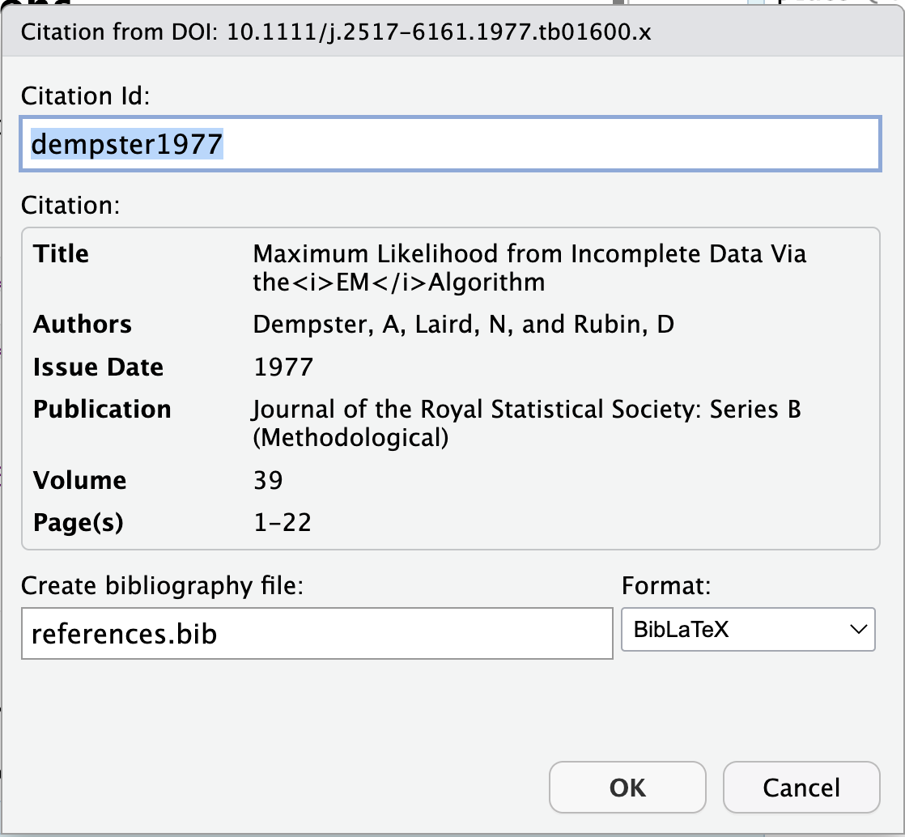

Reports and Themes
Themes
This document uses the
unitedtheme, specified bytheme: unitedin the YAMLquarto themes to change the style of your report.
other format options for HTML reports.
Table of Contents
- Make your report easier to navigate with one line! Add
toc: truein YAML.
Quick and Easy Citations
Benefits
No switching between your document and the
.bibfileNo searching for
bibTexcitations to copy and paste
Creating A Bibtex Citation
To cite this paper, we can copy the doi (number or full link), and paste it in following an
@sign@10.1111/j.2517-6161.1977.tb01600.xYou’ll see a pop-up window like this:

Quarto turns it into this:
@dempster1977Quarto also adds
bibliography: references.bibto YAML
Citing in Your Report
For an in-text citation, leave it as is:
@dempster1977\(\rightarrow\) Dempster, Laird, and Rubin (1977)For a parenthetical citation, put it in brackets:
[@dempster1977]\(\rightarrow\) (Dempster, Laird, and Rubin 1977)
Parameterized Plot
print(params)$interactive
[1] TRUE
$year
[1] 1962
$plot_color
[1] "green"
$show_code
[1] FALSETreat params as a list, access with params$___
Use
plot_colorfor the color of the points in the plotOnly plot data from specified
yearUse
interactive(logical) to determine whether to useggplotly
Tips:
If using parameters, make sure to
print(params)so you know what you’re looking at later.If using parameters, change the
output-filein the YAML as well so you don’t overwrite old reports.
Parameterized Analysis
A linear model of life expectancy as a function of GDP per capita in the year 1962:
Call:
lm(formula = lifeExp ~ gdpPercap, data = gapminder %>% filter(year ==
params$year))
Residuals:
Min 1Q Median 3Q Max
-41.669 -8.728 -2.893 11.640 17.062
Coefficients:
Estimate Std. Error t value Pr(>|t|)
(Intercept) 5.108e+01 1.073e+00 47.621 < 2e-16 ***
gdpPercap 5.349e-04 1.090e-04 4.909 2.51e-06 ***
---
Signif. codes: 0 '***' 0.001 '**' 0.01 '*' 0.05 '.' 0.1 ' ' 1
Residual standard error: 11.21 on 140 degrees of freedom
Multiple R-squared: 0.1469, Adjusted R-squared: 0.1408
F-statistic: 24.1 on 1 and 140 DF, p-value: 2.511e-06Tabs for Multiple Tables
Overall
n 1704
continent (%)
Africa 624 (36.6)
Americas 300 (17.6)
Asia 396 (23.2)
Europe 360 (21.1)
Oceania 24 ( 1.4)
lifeExp (mean (SD)) 59.47 (12.92)
pop (mean (SD)) 29601212.32 (106157896.74)
gdpPercap (mean (SD)) 7215.33 (9857.45) Stratified by continent
Africa Americas
n 624 300
lifeExp (mean (SD)) 48.87 (9.15) 64.66 (9.35)
pop (mean (SD)) 9916003.14 (15490923.32) 24504795.00 (50979430.20)
gdpPercap (mean (SD)) 2193.75 (2827.93) 7136.11 (6396.76)
Stratified by continent
Asia Europe
n 396 360
lifeExp (mean (SD)) 60.06 (11.86) 71.90 (5.43)
pop (mean (SD)) 77038721.97 (206885204.62) 17169764.73 (20519437.65)
gdpPercap (mean (SD)) 7902.15 (14045.37) 14469.48 (9355.21)
Stratified by continent
Oceania p test
n 24
lifeExp (mean (SD)) 74.33 (3.80) <0.001
pop (mean (SD)) 8874672.33 (6506342.47) <0.001
gdpPercap (mean (SD)) 18621.61 (6358.98) <0.001 Reports and Themes Reports and Themes Reports and Themes